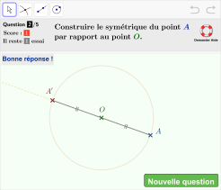

un exercice autocorrectif
avec GeGebra
Ce diaporama vient en complément du document d'accompagnement consacré à la réalisation d'exercices autocorrectifs à l'aide du logiciel GeoGebra.
Il tente d'en reprendre les points essentiels tout en laissant de côté les aspects les plus techniques.
- le générateur d'exercices : https://ggbm.at/nhdxcysw
- des exemples de réalisations : https://ggbm.at/gs7krfrf
- le document d'accompagnement : https://bit.ly/ggbdocexerciseur

Creative Commons Attribution 4.0 International
(CC BY 4.0)
Avant-propos
Le générateur d'exercices, qui fait l'objet du présent diaporama, s'apparente à un outil destiné à faciliter la conception d'exercices autocorrectifs à l'aide du logiciel GeoGebra.
Si des connaissances en JavaScript ne sont pas requises pour manipuler l'outil*, une maîtrise minimale de GeoGebra s'avère, en revanche, indispensable pour parvenir à créer un exercice fonctionnel.
Quelques notions à connaître, en particulier, avant de se lancer :
- les calques : https://bit.ly/ggb_calques
- listes et matrices : https://bit.ly/ggb_listes
- les valeurs booléennes : https://bit.ly/ggb_booleens
- écrire en $\LaTeX$ : https://bit.ly/ggb_latex
fonctionnalités
de l'outil
Vérification de version
Si la version de GeoGebra employée n'est pas suffisamment récente, un message d'avertissement peut être affiché à l'ouverture du fichier (il reste cependant possible d'outrepasser cet avertissement).
Écran d'accueil
Un écran d'accueil (optionnel) permet de présenter l'objectif de l'activité et/ou de préciser la consigne.
Un message automatique décrivant la façon dont est calculé le score dans l'exercice peut être affiché ou non.
Score et nombre de questions
Le nombre de questions, l'affichage du score, la façon dont celui-ci est calculé ainsi que le nombre d'essais disponibles sont paramétrables.
Bouton Aide
Lors d'un travail en salle informatique, un bouton (optionnel) permet à l'élève d'alerter l'enseignant pour qu'il lui vienne en aide.
Ce bouton d'appel à l'aide peut revêtir la forme d'une image ou d'un bouton .
Existence d'une réponse
Avant d'effectuer la vérification de la figure suite à l'appui sur le bouton , le logiciel peut s'assurer que l'élève a construit au moins un objet du type (non nécessairement géométrique) attendu.
Affichage de la réponse attendue
En cas d'erreur, la réponse attendue est affichée et certains objets prédéfinis peuvent être rendus automatiquement visibles. De surcroît, les objets construits par l'élève sont rendus moins opaques.
Incrémentation du score
En cas de réponse correcte, le score est incrémenté selon les paramètres définis par le concepteur de l'exercice.
Si le nombre maximal de questions n'est pas atteint, l'appui sur le bouton permet de passer à la question suivante.
Message de fin d'exercice
L'exercice s'arrête lorsque le nombre maximal de questions est atteint.
Il est, bien évidemment, possible de paramétrer le message s'affichant en fin d'exercice.
Questions chronométrées
La modification de la valeur d'un seul paramètre permet de limiter le temps imparti pour répondre aux questions.
Un chronomètre devient visible et la réponse apparaît si l'élève n'a pas répondu durant la durée accordée.
Vérification à la volée
La construction peut être validée « à la volée » par le logiciel sans que l'élève n'ait à cliquer sur un bouton.
Le bouton devient alors et le nombre de tentatives autorisées n'est plus pris en compte.
Clavier virtuel
Un clavier, paramétrable, est intégrable directement à l'intérieur de la figure. L'intégration ainsi que le paramétrage du clavier ont été rendus aussi automatiques que possible.
Le clavier virtuel peut aussi prendre l'apparence d'une mini-calculatrice.
généraux de fonctionnement
L'onglet JavaScript global
Pour accéder à l'onglet , il suffit d'ouvrir le panneau des propriétés de n'importe quel objet de la figure puis de sélectionner l'onglet et enfin l'onglet .
L'onglet JavaScript global
Pour accéder à l'onglet , il suffit d'ouvrir le panneau des propriétés de n'importe quel objet de la figure puis de sélectionner l'onglet et enfin l'onglet .
C'est dans cette zone que se situe le « moteur » de l'exerciceur constitué d'un ensemble de fonctions, écrites en JavaScript, permettant d'automatiser un grand nombre de tâches :
- gestion du score et du nombre de tentatives ;
- passage d'une question à une autre ;
- affichage d'éléments différents en fonction de la progression dans l'exercice ;
- vérification de la réponse fournie par l'élève ;
- ...
L'onglet JavaScript global
Les différentes fonctions de la zone sont séparées en deux catégories distinctes :
- la première partie du script regroupe les six fonctions modifiables par le concepteur d'exercices (il s'agit essentiellement de fonctions de réglages qui servent à paramétrer finement le fonctionnement général de l'exerciseur) ;
- toutes les autres fonctions permettent à l'exerciseur d'effectuer les tâches pour lesquelles il est conçu : ces fonctions ne doivent donc surtout pas être modifiées !
Les objets de la figure
Initialement, le générateur d'exercices contient déjà de très nombreux objets.
Pour les rendre visibles dans la vue , il suffit de cliquer sur le bouton .
À quelques exceptions près, tous ces objets sont nommés sous la forme :
priv_{nom de l'objet}Parmi les objets prédéfinis de la figure, certains peuvent être modifiés partiellement (forme et/ou contenu) mais les autres objets ne doivent pas être altérés par l'utilisateur (se référer au document d'accompagnement pour la liste des objets modifiables ou non).
{kind=link}
Les calques
L'exerciseur utilise de façon intensive les calques* de GeoGebra afin d'afficher ou de masquer certains éléments de la figure en fonction du contexte.
L'exerciseur ne peut gérer de façon automatique la répartition des objets sur les différents calques que pour ceux dont la condition d'affichage est vide.
Le calque n°0
Le calque n°0 contient tous les objets affichés sur l'écran d'accueil.
Le calque n°1
Les objets du calque n°1 ne sont jamais rendus visibles.
{kind=link}
Le calque n°2
Le calque n°2 contient uniquement le quadrilatère priv_{voile}, qui recouvre toute la zone de travail, rendu visible lorsque la fin d'une question est atteinte.
Lorsque la fin d'une question est atteinte, tous les objets construit par les élèves sont envoyés sur le calque n°1.
De cette manière, le quadrilatère priv_{voile}, qui est semi-transparent, vient recouvrir les objets des élèves, les rendant ainsi moins opaques.
Le calque n°3
Le calque n°3 contient tous les objets construits par l'enseignant ou par l'élève (à l'exception, comme il a déjà été vu, des objets du type variable numérique, booléen et angle).
{kind=link}
Le calque n°9
Les objets du calque n°9 sont rendus visibles uniquement lorsque la fin d'une question est atteinte (que la réponse soit correcte ou non).
Par défaut, ce calque contient les objets ciblés (ceux de la liste priv_{objetscibles}), les différents messages en cas de bonne ou de mauvaise réponse ainsi que le quadrilatère priv_{zonetravail} (affiché seulement quand l'élève requiert une assistance en cliquant sur le bouton dédié).
En affectant des objets sur le calque n°9, le concepteur d'un exercice s'assure que ceux-ci seront rendus visibles lorsque la fin d'une question est atteinte.
En revanche, pour afficher un objet en fin de question, uniquement lorsqu'une mauvaise réponse a été fournie, il convient d'attribuer une condition d'affichage à l'objet concerné en se servant des booléens priv_{finquestion} et priv_{mauvaiserep}.
La liste priv_{liste}
L'objet, de type liste, priv_{liste} est essentiel au fonctionnement de l'exerciseur.
Initialement vide, cette liste est automatiquement complétée par GeoGebra avec le nom de chacun des nouveaux objets construits.
Tenir à jour cette liste permet de supprimer les objets créés par l'élève entre chaque question.
En revanche, en mode conception d'exercice, la suppression automatique des objets de la liste priv_{Liste} peut s'avérer désastreuse puisque les objets créés par l'enseignant seraient supprimés au passage à une nouvelle question !
La liste priv_{liste}
Ainsi, afin de tester un exercice non finalisé, le concepteur doit impérativement penser à vider la liste priv_{liste} avant de cliquer sur le bouton .
Pour cela, trois possibilités :
- vider la liste manuellement depuis la vue ;
- se servir du bouton (valable une seule fois) ;
- enregistrer l'exercice puis rouvrir aussitôt l'exercice.
{kind=link}
La redéfinition des objets
Redéfinir un objet en cours de conception d'exercice peut entraîner des conséquences fâcheuses.
En effet, dans certains cas (en particulier lorsque l'on modifie le type d'un objet), GeoGebra peut être amené à reconstruire entièrement la figure.
Pour des raisons techniques, une telle reconstruction, lorsqu'elle a lieu, empêche l'exerciceur de fonctionner comme attendu (et il s'avère très compliqué de revenir en arrière !).
Ainsi, si un objet doit être redéfini, il est vivement conseillé de commencer par le supprimer avant de créer un nouvel objet portant le même nom.
la zone
JavaScript global
Présentation
Le script, présent dans la zone , propose, dans sa première partie, six fonctions que le concepteur d'exercices peut être amené à modifier.
- la fonction Initialisation ;
- la fonction GgbInitialisation ;
- la fonction Aleatoire ;
- la fonction VerifierFigure ;
- la fonction VerifierObjetsConstruits ;
- la fonction EcouteursObjectUpdateListener.
En règle générale, les modifications qui doivent intervenir au sein de ces fonctions sont effectuées une fois la figure entièrement construite.
La fonction Initialisation
Cette fonction présente la structure suivante :
function Initialisation() {
var parametres = {
'parametre1': valeur1,
'parametre2': valeur2,
...
};
return parametres;
}
Le concepteur d'exercices ne doit modifier que la valeur des différents paramètres* en prenant garde à leur domaine de définition.
Attention à l'utilisation des guillemets !
La fonction GgbInitialisation
Le code, inscrit dans cette fonction, est lu et exécuté uniquement à l'ouverture du fichier.
On peut donc y placer du code servant, par exemple, à initialiser la valeur de certains objets au début de l'exercice.
À l'ouverture du fichier, pour affecter les coordonnées (3 ; −4) au point A et la valeur 6 à la variable numérique mavariable, on écrira :
function GgbInitialisation() {
ggbApplet.evalCommand('SetValue[A,(3,-4)]');
ggbApplet.setValue('mavariable',6);
}
La plupart du temps cette fonction restera vide.
La fonction Aleatoire
Cette fonction, systématiquement appelée lorsqu'une nouvelle question débute, sert principalement à attribuer des valeurs aléatoires à certains objets de la figure. Mais elle peut également être utilisée pour réinitialiser la valeur ou la mise en forme des objets ou encore pour déclencher un événement particulier (recentrage de la vue, remise à zéro du zoom, etc.).
Dans les cas où le concepteur de l'exercice a défini ses objets aléatoires à l'aide de commandes GeoGebra telles que AléaEntreBornes, PointAuHasardDans, ElémentAuHasard, ... , la fonction Aleatoire pourra se limiter à sa plus simple expression.
Pour demander le recalcul des valeurs aléatoires :
function Aleatoire() {
ggbApplet.evalCommand('UpdateConstruction()');
}
La fonction VerifierFigure
Lorsque l'exerciseur a besoin de vérifier la réponse d'un élève, c'est la fonction VerifierFigure qui est appelée et qui est chargée de renvoyer un booléen (true ou false) selon la nature de la réponse fournie.
Le code de cette fonction devra être adapté au cas par cas.
Pour vérifier que la construction contient les objets attendus (définis par le paramètre priv_{objetscibles}) :
function VerifierFigure() {
return ComparerCibles();
}
Pour vérifier que la variable booléenne bonnerep (définie par le concepteur de l'exercice) est bien égale à true :
function VerifierFigure() {
return ggbApplet.getValue('bonnerep') > 0 ;
}
La fonction VerifierObjetsConstruits
Cette fonction est appelée au moment où l'élève appuie sur le bouton et permet de vérifier qu'au moins un objet du type attendu a été construit.
function VerifierObjetsConstruits() {
return ggbApplet.getValue('priv_{constructionrequise}')>0 ||
ggbApplet.getValue('priv_{verifierexistencetypeobjet}')==0 ;
}
Lorsque l'élève est amené à construire un objet géométrique ou lorsque la concepteur de l'exercice ne souhaite pas effectuer de vérification préalable quant à l'existence d'un objet du type attendu, ce code peut rester inchangé.
La fonction EcouteursObjectUpdateListener
Il peut être parfois utile de déclencher un script à chaque fois que la valeur d'un objet est actualisée. En général, on utilise, pour ce faire, un script affecté à l'onglet de l'objet concerné.
Néanmoins, dans de rares cas, il est nécessaire de recourir à un « écouteur » pour intercepter le changement de valeur d'un objet.
La fonction EcouteursObjectUpdateListener permet d'enregistrer, au démarrage de l'exercice, ses propres fonctions d'écoutes relatives à l'actualisation des objets.
function EcouteursObjectUpdateListener() {
var ecouteursObjUp = {
'objet1': 'fonction1',
'objet2': 'fonction2',
...
};
return ecouteursObjUp;
}
objets prédéfinis
à connaître
Les points Coin1, Coin2, Coin3 et Coin4
Ces points peuvent s'avérer utiles pour positionner précisément certains objets relativement à la vue .
Pour cela, on pourra, par exemple, se servir de l'onglet du panneau des propriétés des objets.
On pourra également utiliser la commande Texte sous la forme :
montexte=Texte("\dfrac{a}{b}", Coin4, false, true, 1,-1)
Les variables priv_{xfactor} et priv_{yfactor}
Ces deux variables numériques sont définies de la façon suivante :
priv_{xfactor}=(x(Coin2) - x(Coin1)) / x(Coin5)
priv_{yfactor}=(y(Coin3) - y(Coin2)) / y(Coin5)
Coin5 est un point dont l'abscisse et l'ordonnée donnent respectivement la largeur et la hauteur de la vue , exprimées en pixels.
Ainsi, priv_{xfactor} et priv_{yfactor} permettent d'exprimer des coordonnées en pixels, indépendamment de l'échelle choisie pour les axes.
Par exemple, le point A défini par :
A = (50priv_{xfactor}, 100priv_{yfactor})
est toujours situé 50 pixels à droite de l'origine du repère et 100 pixels au-dessus de celle-ci.
Les messages pour les consignes
Cet objet de type texte permet de définir le message s'affichant sur l'écran d'accueil.
Cet objet de type texte permet de définir le texte de la question. Son contenu peut être rendu dynamique.
Le curseur priv_{anim}
Le variable numérique priv_{anim} est définie comme un curseur à valeurs entières comprises en 0 et 10 et devient animée lorsqu'un message temporaire doit être affiché à l'écran.
{kind=link}
Le booléen priv_{finquestion}
Cette variable booléenne vaut true uniquement lorsque l'élève a atteint la fin d'une question et false sinon.
En fin de question, on peut se servir de ce booléen et des booléens priv_{bonnerep} ou priv_{mauvaiserep} pour afficher des objets en fonction de la réponse de l'élève.
Il se révèle également souvent pratique d'attacher un script à cet objet afin, par exemple, de colorer des champs texte ou encore de bloquer des éléments de formulaire.
étapes pour
créer un exercice
Aperçu
Dix étapes pour parvenir à créer un exercice :
Avant de se lancer dans la création d'un exercice et dans le but de mieux appréhender le mode de fonctionnement du générateur d'exercices et de commencer à se familiariser avec les objets à manipuler, le lecteur est fortement incité à réaliser par lui-même quelques uns des exemples de réalisations proposé dans le paragraphe §2 du document d'accompagnement.
Phase de réflexion
- Quels sont les intentions, les objectifs, les compétences visés ?
- Quels sont les prérequis indispensables ?
- Quelles sont les modalités d'intégration, au sein des apprentissages, du ou des exercices prévus ?
- Quelles sont les variables didactiques (en particulier, quels éléments de la figure se verront affecter des valeurs aléatoires et pour quels domaines de définition) ?
- Quelles rétroactions mettre en place ?
- Quelles sont les contraintes techniques et en quoi peuvent-elles modifier les réponses aux points précédents ?
De manière générale, un exerciseur doit répondre aux contraintes suivantes :
- la tâche assignée doit être énoncée de manière facilement compréhensible ;
- la forme de la réponse attendue doit être clairement identifiée par les élèves ;
- un processus de validation, de correction ou d'évaluation doit être proposé ;
- toute réponse juste doit être a acceptée qu'elle qu'en soit la forme ;
- une démarche automatique et répétée indéfiniment ne peut permettre de répondre à coup sûr.
Ouverture du fichier
- Ouvrir le fichier générateur d'exercices.
- Si une copie physique du fichier generateur_exercice.ggb est présente dans le disque dur de l'ordinateur, un double clic sur son nom suffit pour l'ouvrir avec GeoGebra (on peut aussi se servir du menu du logiciel).
- Si l'ordinateur est connecté à Internet, il est aussi possible d'actionner le menu en saisissant l'adresse : https://ggbm.at/nhdxcysw.
- L'enregistrer immédiatement sous un nouveau nom.
Utiliser une version 5 récente de GeoGebra !
Avant de poursuivre...
À ce stade, il est très vivement recommandé d'enregistrer son fichier de travail le plus régulièrement possible !
Il est également fortement conseillé d'enregistrer les étapes consécutives sont des noms différents (en incrémentant un compteur, par exemple)
Création de la figure
- Cliquer sur le bouton .
Avant de cliquer sur le bouton , il est aussi possible de saisir la consigne devant s'afficher sur l'écran d'accueil en modifiant l'objet priv_{txtconsigne} (mais cela peut également être reporté à plus tard).
- Ouvrir, si nécessaire, la vue .
Pour travailler avec davantage de confort, il est conseillé de détacher la vue de la fenêtre principale à l'aide du bouton .
- Créer tous les objets de la figure, y compris ceux que l'élève doit construire sans nécessairement s'occuper de la mise en forme.
Souvent, la partie la plus délicate consistera à définir les objets aléatoires.
Mise en forme
- Appliquer la mise en forme désirée (couleur, épaisseur, taille, ...) aux différents éléments de la figure.
- Modifier, éventuellement, la légende des objets en utilisant $\LaTeX$.

- Affecter la condition d'affichage false à tous les objets qui n'ont pas vocation a être visibles par les élèves.
L'onglet JavaScript global
- Dans la fonction Initialisation, modifier les différents paramètres en fonction des besoins et en complétant, si nécessaire, la liste priv_{objetscibles} des objets à construire par l'élève.
Si la valeur par défaut du paramètre autoriserDéplacementVue doit être modifiée (initialement true), il est préférable d'attendre le dernier moment (la finalisation de l'exercice) pour en changer la valeur.
- Compléter le code de la fonction Aleatoire.
- Modifier les fonctions VerifierFigure et VerifierObjetsConstruits.
- Dans les cas les plus complexes, il sera peut-être nécessaire de coder les fonctions GgbInitialisation et EcouteursObjectUpdateListener.
Pour que les modification effectuées dans cette zone soient prises en compte, à ce stade, il vaut mieux enregistrer le fichier, le fermer puis l'ouvrir à nouveau.
Les consignes
{kind=link}
Redimensionnement de la fenêtre
- Redimensionner la fenêtre de travail aux dimensions souhaitées.
Lorsque l'on modifie la taille de la fênêtre, ses dimensions (en pixels) s'affichent temporairement dans le coin supérieur gauche.
{kind=link}
Il faut prendre garde à ne pas choisir des dimensions trop importantes qui, dans le cadre d'un travail en ligne, rendraient les manipulations difficiles sur un appareil mobile (téléphone portable, tablette).
Aspect de la fenêtre
Avant de positionner avec précision les différents objets de la figure, il est nécessaire de modifier l'aspect de la fenêtre de travail de telle manière qu'elle s'affiche sous une forme quasi-identique à celle qu'elle revêtira une fois en ligne.
- Utiliser le menu pour désactiver l'affichage de tous les éléments superflus.
{kind=link}
Positionnement des objets texte prédéfinis
- Positionner avec précision l'objet priv_{msg} puis le rendre non sélectionnable.
- Positionner avec précision l'objet priv_{MsgEssayeEncore} puis le rendre non sélectionnable.
- Positionner avec précision l'objet priv_{messageterminé} puis le rendre non sélectionnable.
Par défaut, l'objet priv_{messageterminé} est centré sur l'origine de la vue . Pour le centrer dans la vue, il suffit donc de centrer le repère à l'aide du menu contextuel .

Finalisation
- Positionner avec précision tous les autres objets de la figure.
- Affecter au calque n°9 les objets qui ne doivent apparaître qu'en fin de question.
{kind=link}
Finalisation
- Si nécessaire, utiliser le menu pour définir les outils accessibles par les élèves.
- Affecter, si besoin, un script à l'objet priv_{finquestion}.
- Ajuster les coordonnées des vecteurs priv_{OffsetBtnCommencer}, priv_{OffsetConsigne} et priv_{OffsetMsgScore}.
Finalisation
- Si cela n'a pas encore été fait, cliquer sur le bouton .
- Cacher toutes les vues autres que les vues et .
- Dans le cas où l'exercice est destiné à être publié sur la plate-forme Moodle, il sera judicieux d'affecter la valeur false au paramètre autoriserDéplacementVue (dans la fonction Initialisation de la zone ).
function Initialisation() {
var parametres = {
'priv_{objetscibles}': '{}',
'priv_{accueil}': true,
'priv_{maxquestions}': 5,
'priv_{maxtentatives}': 2,
'priv_{affichageautotentatives}': true,
'priv_{scorefractionnaire}': true,
'priv_{augmentationscore}': 0.5,
'priv_{msgcalculscore}': true,
'priv_{verifierexistencetypeobjet}': true,
'priv_{typeobjetattendu}': '"point"',
'priv_{msg}': '"Il faut construire un point !"',
'priv_{verifauto}': false,
'priv_{montrerBoutonAide}': true,
'priv_{AideImage}': true,
'priv_{changerFondReponse}': true,
'priv_{fondpardefaut}': '"FFFFFF"',
'priv_{fondpouraide}': '"FF4775"',
'priv_{fondbonnereponse}': '"E1FFE1"',
'priv_{fondmauvaisereponse}': '"FFADAD"',
'priv_{montrergrille}': false,
'priv_{montreraxex}': false,
'priv_{montreraxey}': false,
'priv_{chrono}': false,
'priv_{dureechrono}': 60,
'priv_{AideStopChrono}': true,
'priv_{empecherAnnuler}': true,
'priv_{versionGgbrequise}': 659,
'priv_{vitessecurseur}': 5,
'autoriserDéplacementVue': false
};
return parametres;
}
- Enregistrer la version finale de l'exercice !
dans Moodle
Présentation
L'intégration d'un exercice, conçu l'aide du générateur d'exercices, au sein de la plate-forme Moodle* s'avère des plus simples sous réserve que le module GeoGebra** soit disponible sur la plate-forme.
Avec ce module, le score obtenu à l'issue d'un exercice est transmis à Moodle ce qui permet à l'enseignant de suivre les progrès de ses élèves.
Ajout d'une activité de type GeoGebra
Pour insérer un exercice :
{kind=link}
Paramétrage de l'activité1/4
{kind=link}
Paramétrage de l'activité2/4
Pour un exercice préalablement déposé dans le dépôt GeoGebra :
{kind=link}
{kind=link}
{kind=link}
Paramétrage de l'activité3/4
Dans le cadre d'une évaluation formative, il est recommandé de ne pas limiter le nombre de tentatives autorisées et de régler le champ à .
Afin que l'exercice transmette la valeur de la variable grade à Moodle, il est impératif de cocher la case .
Paramétrage de l'activité4/4
Cliquer sur et sélectionner les fonctionnalités désirées (en particulier, cocher si l'élève a des constructions à effectuer).
Dans le champ , il est primordial de sélectionner .
À propos de la taille de l'applet


 Valeurs à reporter
Valeurs à reporter
L'activité vue par l'élève
L'écran ci-contre montre l'activité telle qu'elle s'affiche côté élève.
À la fin de l'exercice, pour que leur score soit conservé, il est impératif que les élèves cliquent sur le bouton Envoyer et terminer.
(champ )
(case à cocher )

Affichage par l'élève du score obtenu
À tout instant, les élèves peuvent retrouver les scores obtenus lors de leurs différentes tentatives :
Affichage par l'enseignant des scores obtenus
De son côté, l'enseignant a la possibilité de consulter, en temps réel, les résultats de ses élèves :
À propos de la figure enregistrée par Moodle
Lorsque l'enseignant clique sur le menu (ou lorsque l'élève clique sur le menu ), la figure finale, enregistrée au moment de l'appui sur le bouton Envoyer et terminer, est supposée s'afficher.
Malheureusement, il semble que le module GeoGebra pour Moodle n'enregistre pas correctement l'état final du fichier (l'utilisation intensive de JavaScript en est très certainement la cause) et, de fait, la figure affichée dans cette rubrique se révèle inexploitable (ce qui, quoi qu'il en soit, ne s'avère guère dommageable dans le cadre d'un exercice autocorrigé).
Clavier intégré vs clavier virtuel
Lorsqu'une applet GeoGebra est exécutée sur un appareil mobile, le clavier intégré à l'application rend aisée la complétion des champs de type texte.
{kind=link}
Néanmoins, ce clavier intégré ne se révèle guère paramétrable (taille, position, touches autorisées, ...) et, de surcroît, son affichage peut, sous certaines circonstances, rendre pénible la lisibilité de la figure.
C'est la raison pour laquelle le clavier virtuel, exposé dans cette section, peut se présenter comme une alternative à l'utilisateur expérimenté souhaitant rendre accessible un clavier directement au sein d'une figure.
Importation du clavier virtuel dans une figure
Pour importer le clavier virtuel dans une figure :
{kind=link}
Importation du clavier virtuel dans une figure (remarques)
- Le clavier virtuel peut être importé à tout moment dans la figure de travail. Néanmoins, il est recommandé d'insérer le clavier virtuel au dernier moment, une fois la figure entièrement construite.
- L'importation du fichier clavier virtuel entraîne, dans un premier temps, l'insertion de trois nouveaux objets dans la figure. Certains d'entre eux seront automatiquement supprimés à la fin de la procédure.
Il est fortement conseillé d'enregistrer le fichier de travail avant d'importer le fichier clavier virtuel.
Paramétrage et génération du clavier virtuel1/3
Cliquer sur le bouton permet de générer le clavier virtuel au sein de la figure ainsi que d'éventuels champs de saisie associés au clavier.
Mais, auparavant, il est nécessaire de paramétrer ce que le script associé au bouton doit produire.
Les paramètres modifiables sont situés au début du script associé au bouton :
{kind=link}
Paramétrage et génération du clavier virtuel2/3
Agir sur la valeur des paramètres situés en début de script permet de modifier la manière dont le script va générer le clavier virtuel ainsi que les éventuels différents champs de saisie associés à ce clavier.
var Motif = [
["0", "1", "2", "3", "4", "Eff"],
["5", "6", "7", "8", "9", "EffTout"],
["+", "-", "*", "/", "(", ")"],
[".", "x", "x²", "cos", "^", ""]
];
var delta = 10;
var largeurbtn = 70;
var hauteurbtn = 70;
var sizeM = 4;
var TouchesNormalesCol = [0, 102, 153, 1];
var TouchesNormalesFond = [250, 250, 250, 255];
var TouchesEffacerCol = [255, 255, 255, 1];
var TouchesEffacerFond = [0, 153, 204, 255];
var TouchesOpCol = [255, 255, 255, 1];
var TouchesOpFond = [0, 102, 153, 255];
var ToucheExeCol = [255, 255, 255, 1];
var ToucheExeFond = [255, 153, 51, 255];
var FondClavier = '#006699';
var opaciteClavier = 0.25;
var InsererChamps = true;
var ModeCalc = false;
var alignCalc = 'left';
var autoEff = false;
var Champs = [
['', 300, 10, true]
];
var FondChamps = '#F0F0F0';
var FondChampsSel = '#FFFACD';
var FondChampExe = '#D5E2D5';
var FondChampExeSel = '#E1E8B3';
Les paramètres les plus importants sont :
- Motif : permet de spécifier les touches à insérer ainsi que leur position ;
- InsererChamps : permet de générer un ou plusieurs champs de saisie associés au clavier virtuel ;
- Champs : permet de paramétrer les différents champs à insérer.
Paramétrage et génération du clavier virtuel3/3
Une fois les valeurs des paramètres modifiées, il suffit de fermer le panneau des propriétés du bouton et de cliquer sur celui-ci pour intégrer le clavier au sein de la figure.
{kind=link}
Avant de cliquer sur le bouton , il est très fortement recommandé d'enregistrer le fichier sous un nouveau nom. Ainsi, en cas d'erreur de syntaxe dans le script, ou d'oubli, il sera très simple de revenir en arrière.
Exploitation des saisies des élèves1/2
Les textes saisis par l'élève dans le ou les différents champs associés au clavier virtuel sont stockés dans les listes priv_{ClavierChaines} et priv_{ClavierChainesLaTeX}.
Chaque élément (qui est un objet de type texte) de ces listes contient le texte saisi dans l'un des champs de la figure.
Ainsi, pour accéder au texte (au format standart) saisi par l'élève dans le champ n°2, on utilisera la commande Elément de la manière suivante :
Elément(priv_{ClavierChaines}, 2)
En pratique, la liste priv_{ClavierChainesLaTeX} sert essentiellement à afficher, au format $\LaTeX$, le texte entré par les élèves.
Exploitation des saisies des élèves2/2
Pour exploiter la saisie d'un élève (la comparer, par exemple, au résultat attendu), on utilise la liste priv_{ClavierChaines} et l'une des commandes :
- AnalyserNombre : lorsque l'élève ne peut saisir qu'une valeur numérique ;
- ou
- AnalyserFonction : dans tous les autres cas.
En supposant que priv_{ClavierChaines}={"61","5x-2"}:
Pour stocker, dans rep1, le nombre 61, on écrit :
rep1=AnalyserNombre(Elément(priv_{ClavierChaines}, 1))
Pour stocker, dans rep2, la fonction $x\longmapsto 5x-2$, on écrit :
rep2=AnalyserFonction(Elément(priv_{ClavierChaines}, 2))
Effectuer des calculs
Lorsque la touche figure parmi la liste des touches disponibles, c'est toujours le champ n°1 qui se voit destiné à afficher les calculs et leurs résultats.
Attribuer la valeur true au paramètre ModeCalc contraint le champ n°1 à s'afficher au-dessus des touches du clavier.
Il est nécessaire d'utiliser la touche pour les calculs utilisant les fonctions trigonométriques et devant être menés en degrés.
- liste des types d'objets disponibles dans GeoGebra :
- fonctions JavaScript spécifiques à GeoGebra :
- la brochure Créer avec GeoGebra :